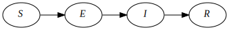

By Nathan Geffen, January 2023
There are many ways to model epidemics, but we can broadly divide models into two types: macro and micro. The former typically use a set of difference equations to calculate changes in a population, while the latter consist of numerous agents, each representing a person with their own specific behaviour. Macro models are often also called compartmental or equation-based, while micro models are often called agent-based or individual-based simulations.
At the onset of the Covid pandemic, many websites explained how the simplest useful macro model, an SIR one (for Susceptible-Infectious-Recovered), worked. We'll start with that and then try to implement an equivalent micro model. We'll then discuss the differences between the two models and their consequences for understanding real-world epidemics. Then we'll implement models of HIV and Covid and consider what we can learn about these and other infectious diseases from macro and micro models.
This page has little asides that you may find useful. They are in a gray box. Click the button at the top of the box to expand and read an aside.
We start off with a very simple infectious disease. It has the following characteristics:
No-one dies and there are no births or migration into or out of this population, at least for the time period that we model.
Characteristic 3 of our model is what's commonly called $\underline{R}_0$ in epidemiological literature. The real-world use of $\underline{R}_0$ is much more limited than is usually admitted but it's still useful.
We call our description above a model world. We can implement both a macro or a micro model version of it.
In this population we have people who are Susceptible to the infection, but not yet infected. There are infected people, and all infected people also Infectious. And we have Recovered people. That's three compartments: Susceptible, Infectious and Recovered, abbreviated as SIR.
We initialize our model so that nearly everyone in the population is uninfected and has never had the infection. In other words everyone is in the Susceptible compartment and a tiny number are in the Infectious compartment.
Let's assume the population size is 100. Then we'll set $S$, the number of people in the Susceptible compartment to 99 and $I$, the number of people in the Infectious compartment to 1. The number of people, $R$, in the Recovered compartment is 0. (Note we do not underline ${R}$, the number of recovered people, to differentiate it from $\underline{R}_0$, the number of people that each infectious person will infect when the epidemic is still very small. I wish this was a standard adopted throughout infectious disease literature.)
All the above is common to both the macro and micro models that we implement. Now let's describe specific details of our macro model:
We iteratively update the $S$, $I$ and $R$ compartments with the number of people who have moved between them. In our model each iteration represents a day in our infectious disease world. These equations describe what happens on each iteration:
Note that the number of people in our macro model compartments are continuous real numbers, not discrete. This is a big difference between our macro and micro models.
The number of people who become infected on each iteration, or day, of our model is a function of S, I and the risk of infection $\lambda$. Since all three of these variables change with time, we subscript them. This equation describes the flow from $S$ to $I$: \begin{equation} S_{t+1}=S_t - \lambda_t S_t \end{equation}
Since people mix homogenously, we have: \begin{equation} \lambda_t = \beta I_t \end{equation} where \begin{equation} \beta = {\underline{R}_0 \over {ND}} \end{equation} where $N$ is the population size and $D$ is the average number of days a person is infected (5 in our model).
The other equations in the model are simple:
\begin{equation} I_{t+1}=I_t + \lambda_t S_t - rI_t \end{equation} \begin{equation} R_{t+1}=R_t + rI_t \end{equation} where $r$ is the rate of recovery per day, or $1/5$ in our model.
We can depict what happens on each time step (or day) graphically:
There are four boxes shown in each model:
Adjust the speed slider to make the model run faster or slower.
Click the Run button to run a model. It changes to a Stop button while the model is running so that you can interrupt the model. This is useful if it's taking too long.
Now let's implement a micro model that approximates the above macro model.
A micro model consists of agents and events. An agent typically represents a single person in a population. An event typically is executed on a subset of agents.
There are three stages to executing a micro model: before events, during events and after events.
First execute the before events. These typically would create and initialise the agents, write a report of the initial state of the population and perhaps calculate some working variables that won't change once the simulation starts.
Then repeatedly execute the during events until some stop condition is met. A simple stop condition is simply to execute the during events $n$ times, where $n$ is a user-defined constant. Typical during events would shuffle the agents (to generate more stochasticity), infect some susceptibe agents, vaccinate some agents, recover some infected agents, or kill some ill agents.
Finally execute the after events which would typically be writing a report or creating a CSV file of the outputs.
Here is the structure of the micro models I tend to implement
Execute before events
# Simulation loop:
Loop n times:
for each during event, e:
For each agent, a:
If e should be applied to a:
e(a)
Execute after events
Here is a micro model for SIR
Try running the above two models multiple times. What do you notice?
Even with these two models of our simple model world, there are already interesting observations we can make:
I ran the micro model 100 times. In some simulations, there are no new infections. The most number of infections in a simulation was 856 infections, higher than the macro model. But the mean number of total infections across the simulations was only 472, compared to 804 in the macro model. One thing of real-world consequence that this suggests is that if and when an infectious diseases explodes into an epidemic in a particular community or neighbourhood is, to a great extent, a result of chance, even if an infected person enters the community.
Here are the two models again but with one difference: the number of infections in the initial population is 100 instead of 1.
First the macro model:
Now the micro model:
Now running the micro model 100 times yields a mean of 843 infections per simulation — you may get a slightly different answer each time you run it — about the same as the macro model's 842. The minimum number of infections in these 100 simulations was 767 and the maximum was 892. Again, your outputs will likely differ a little.
Play around with the other parameters, $\underline{R}_0$ and $D$, to see how changing these changes the models' outputs.
Instead of implementing a macro model as a series of difference equations, we could instead use differential equations. There are advantages to this approach:
Recasting our difference equations as differential equations, we get: \begin{equation} \frac{dS}{dt} = -\beta I(t) S(t) \end{equation}, \begin{equation} \frac{dI}{dt} = \beta I(t) S(t) - r I(t) \end{equation} and \begin{equation} \frac{dR}{dt} = r I(t) \end{equation}
Let's get a bit more complicated. We change our model world so that there's an exposure compartment before an infectious one. When exposed a person is infected, but not infectious. In our model world the average exposure period is two days. This is an SEIR model.

Here's the macro model version of SEIR:
Here's the micro model version of SEIR.
I ran the macro model once and the micro model 1000 times with the number of initial exposures set to 1, 10, 50 and 100, and the initial susceptibles equal to 999, 990 950 and 900 respectively.
Below are the results. As usual, because the micro model is stochastic, your results will probably differ a little.
| Macro model | Micro model (1000 simulations) | |||
|---|---|---|---|---|
| Exposed at start | Infections | Mean | Min | Max |
| 1 | 796 | 382 | 1 | 856 |
| 10 | 808 | 803 | 28 | 879 |
| 50 | 822 | 819 | 729 | 891 |
| 100 | 838 | 837 | 736 | 915 |
The results are consistent with what we see for the SIR models.
In the late 2000s there was a feisty discussion about when was the best time for people with HIV to start antiretroviral treatment. Antiretroviral pills taken daily for life reduced the number of HIV virions in the blood of infected people, usually to undetectable levels. This brought two potential advantages: (1) it extended the life-expectancy to almost normal and (2) it reduced the risk of transmitting the virus to others.
But the ideal time to start treatment wasn't clear. Three concerns affecting this were (1) the side effects of the drugs, (2) eventual drug resistance and (3) the cost of the drugs. By the mid 20-teens large well-conducted clinical trials had shown the benefit of starting treatment as soon as a person was diagnosed were substantial. Moreover drug resistance and serious side effects with newer antiretroviral regimens have become minor problems.
Nevertheless in the late 2000s all of this was unclear. World Health Organisation researchers (Granich et al. 2009) published models in The Lancet that showed that a policy of actively testing and immediately treating people with HIV in South Africa, the state with the most number of people with this virus in the world, would reduce the country's HIV prevalence to a negligible level in 50 years.
The paper certainly made a splash, evoking voiceferous discussion. According to Google Scholar it has been cited over 2,300 times. I suspect that until the Covid-19 pandemic it was the most highly cited infectious disease model ever.
The graphic with its accompanying caption below, copied from the Granich paper in The Lancet, describes one of their models.
This models a world much more complex than our previous models. It accounts for population growth and deaths. The model specification has 10 compartments and another 10 parameters. Here is my implementation of the Granich model.
We can quite easily implement a microsimulation version of this.
Here is a quick and dirty Covid-like-disease model.
Here is the equivalent micro model.